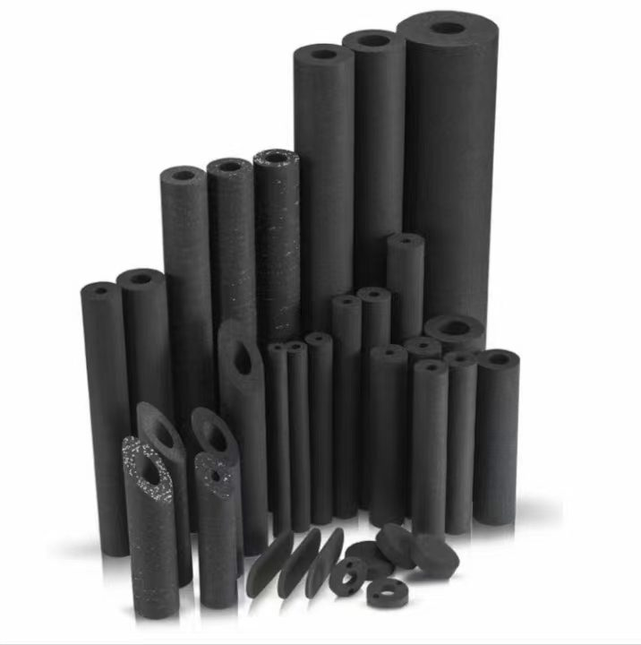
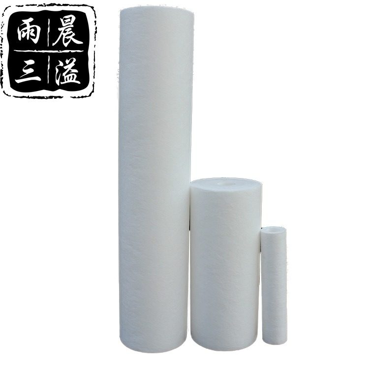
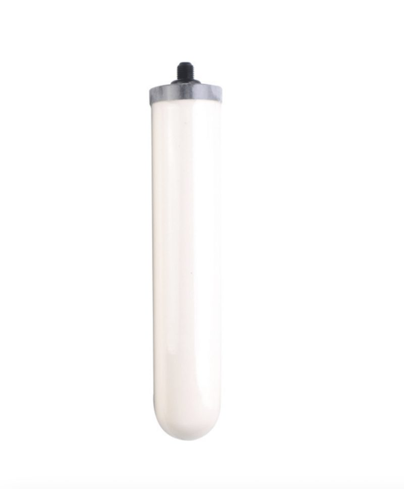
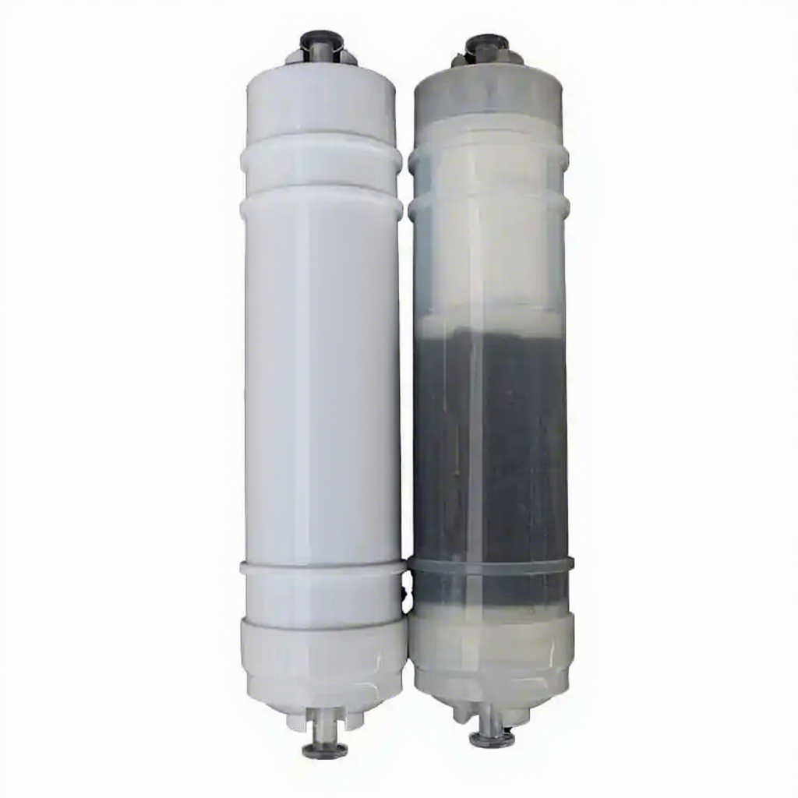
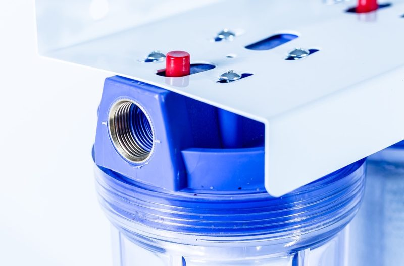

CTO Coconut Shell CTO Carbon Block Filter Patron
Högkvalitativ vattenfiltreringslösning. Fabriksförsörjning i grossistledet, anpassningsbar för OEM/ODM. NSF/ISO-certifierad för in...
View Details →
Högkvalitativ vattenfiltreringslösning. Fabriksförsörjning i grossistledet, anpassningsbar för OEM/ODM. NSF/ISO-certifierad för industriell och kommersiell vattenrening. Tillverkad vid vår 20 000+ m² stora ISO 9001:2015-certifierade anläggning i Yuanhua Town, Haining City, Zhejiang-provinsen, Kina. Denna produkt är en del av vår fullstack-vattenfiltreringslinje – oberoende testad enligt NSF/ANSI 42 & 53-standarder av SGS, med CE-märkning för europeisk importöverensstämmelse och materialdeklarationer av FDA-kvalitet på begäran. OEM/ODM-anpassning för egna märken är tillgänglig: varumärkestryck, anpassad ändlocksgjutning, färgmatchning och förpackning. Standard MOQ från 1 000 st; bulkpartihandel FOB Shanghai/Ningbo med betalningsvillkor T/T 30/70 eller L/C vid syn. Vi exporterar för närvarande till 50+ länder inklusive USA, Tyskland, Ryssland, Saudiarabien, Malaysia, Indonesien och Brasilien, med fullständig halal-certifiering (JAKIM) för muslimska marknader.
| Material | 100% Polypropylene |
|---|---|
| Filtration Accuracy | 1 µm / 5 µm / 10 µm (customizable) |
| Standard Length | 10" / 20" (others on request) |
| Arbetstemperatur | 5°C – 45°C |
| Max arbetstryck | 0.4 MPa (60 psi) |
| Livslängd | 3 – 12 months (depending on water quality) |
| Certifieringar | NSF/ANSI 42 & 53, ISO 9001:2015, SGS, FDA |
| OEM/ODM | Available · MOQ 1,000 pcs |
| Sizes | 10–40 inch |
| Removes | Sediment 5μm |
| Size | 10" to 50" |
| Micron | As small as 0.1 microns |
| Type | DOE or SOE |
← Back to All Products Produkter

Högkvalitativ vattenfiltreringslösning. Fabriksförsörjning i grossistledet, anpassningsbar för OEM/ODM. NSF/ISO-certifierad för in...
View Details →
Högkvalitativ vattenfiltreringslösning. Fabriksförsörjning i grossistledet, anpassningsbar för OEM/ODM. NSF/ISO-certifierad för in...
View Details →
Högkvalitativ vattenfiltreringslösning. Fabriksförsörjning i grossistledet, anpassningsbar för OEM/ODM. NSF/ISO-certifierad för in...
View Details →
Högkvalitativ vattenfiltreringslösning. Fabriksförsörjning i grossistledet, anpassningsbar för OEM/ODM. NSF/ISO-certifierad för in...
View Details →